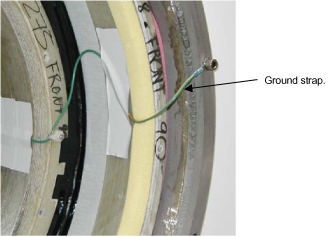
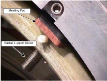
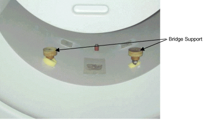
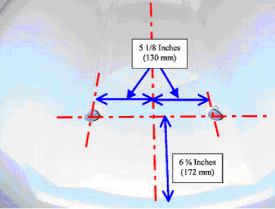

Operating Documentation
Direction 5440000, Rev# 5
Signa HDxt Service Methods
Module Version 1.0, Version Date 5/3/07
Operating Documentation |
1. Verify that the RF Grounding strap is installed. The Grounding strap is a wire that connects the magnet ground and the RF shield. Illustration 1.
Illustration 1: Location of RF Shield.

2. Verify that Radial supports have been installed. The Radial Supports secure the upper portion of the gradient coil to the magnet warm bore. There are four radial supports, two are on the front of the magnet in the 10:00 and 2:00 position, and two in the rear in the 10:00 and 2:00 position. See Illustration 2.
Illustration 2: Radial Supports

3. Verification of Bridge Support Installation.
4. For LCC magnets with skin tight covers, and old style one-piece bridge, verify that bridge supports are installed. See Illustration 3. The Bridge supports should be visible by lifting up on the bridge.
Illustration 3: Skin Tight cover Bridge Support

5. For all magnets with Saltbox covers, see Illustration 4. Lift up the bridge. You should see holes and supports in the position noted below in the front endbell cover.
Illustration 4: Saltbox Magnet Bridge Support
